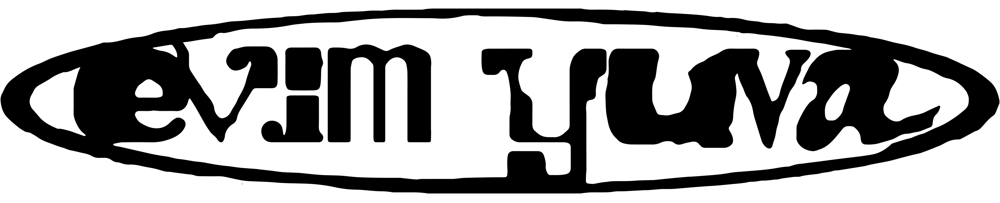
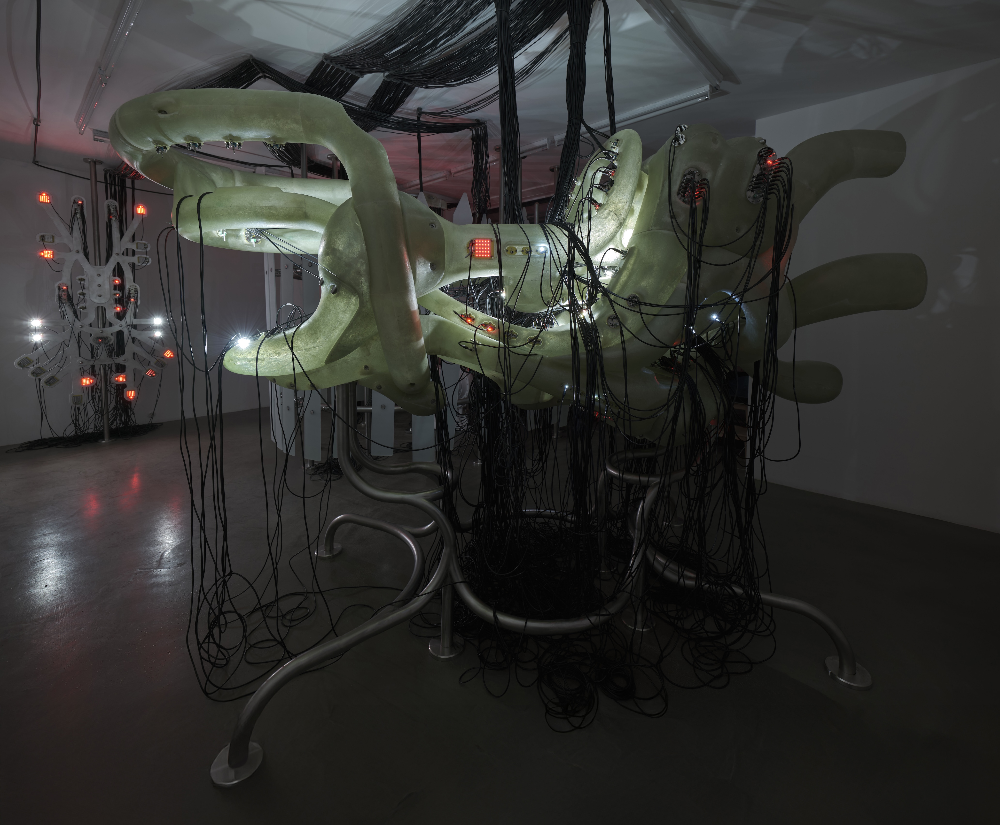
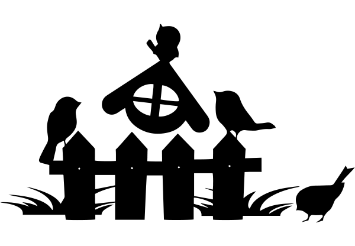

evim yuva
Curation: Serra Duran ParalıVenue: BENTA, Istanbul
Opening - Closing Dates: 25 April 2025 - 1 July 2025
Photography: Barış Özçetin
Graphic Design: Cestainsi

my home is a nest,
my home is a shelter
my home is a haven
If I were home, I would envelop my human keepers in a warm, womb-like embrace—to shield them from the out-there. I would whisper secrets to the wires that run through the plastered walls and tell them tangled tales of transmissions from lesser homes, to build an environment that causes no pain. For one, I’d make sure that the router never lags, and the stove never runs cold. I would keep the bad vibes out and let the sunshine in. To see a bright world through my window eyes, to play and dance, to be reckless and wild. To watch you grow, all lush and vibrant like an olive tree—until it’s time to run freely.
In ‘evim yuva’, an exhibition by artist Barış Çavuşoğlu, the home is a place of protection and refuge. Inspired by his childhood home, which Çavuşoğlu compares to a well-oiled machine, the exhibition consists of two central sculptures that borrow from the visual language of industrial design to reimagine the domestic sphere as a well-structured and self-regulated ecosystem, where everything functions as it should.
Growing up with engineer parents, Çavuşoğlu has always been surrounded by all kinds of tools – CNC machines, injection moulding systems, lathes. The subsequent mise-en-scène presents a mechanised view of suburban life in the 90s, a nostalgic portrait of work and care through the lens of a robotic arm surrounded by a control unit, capable of two simple actions: pressing buttons and combing hair. Surrounded by a sanded glass partition made to resemble the wooden fence of a suburban house, there’s a clear divide between the safety of the indoors and the unknown that persists beyond the borders of the peaceful refuge – it evokes a false sense of security, which challenges the inner reality, and therefore blurs and jumbles its very existence.
In contrast, the sculptures situated outside the fence break away from the hyper-constrained nature of the indoors – its futuristic yet organic form resembles that of a mecha from a Japanese anime, and hints at the creative potential that lies beyond the fantasy borders. Built from fibreglass and steel, the sculptures aren’t separate from the control room, but rather they are a product of the intricate system that made its existence possible. Everything is interconnected, both metaphorically and literally – through a sprawling network of wires – that suggest that each node is part of a great whole. Still, there’s an impermanence that permeates the exhibit. Pulling apart the mainframe to see a life that exceeds its initial bandwidth, the home might indeed be a nest – family bonds as essential as circuits and wires to a machine – yet there’s new realities that extend far beyond its four walls. “Although eventually realizing that this structured system wouldn’t last forever,” Çavuşoğlu concludes, “I still recklessly embraced my role as a child within it.”
-Günseli Yalçınkaya



 Full Exhibiton Documentation DB
Full Exhibiton Documentation DB